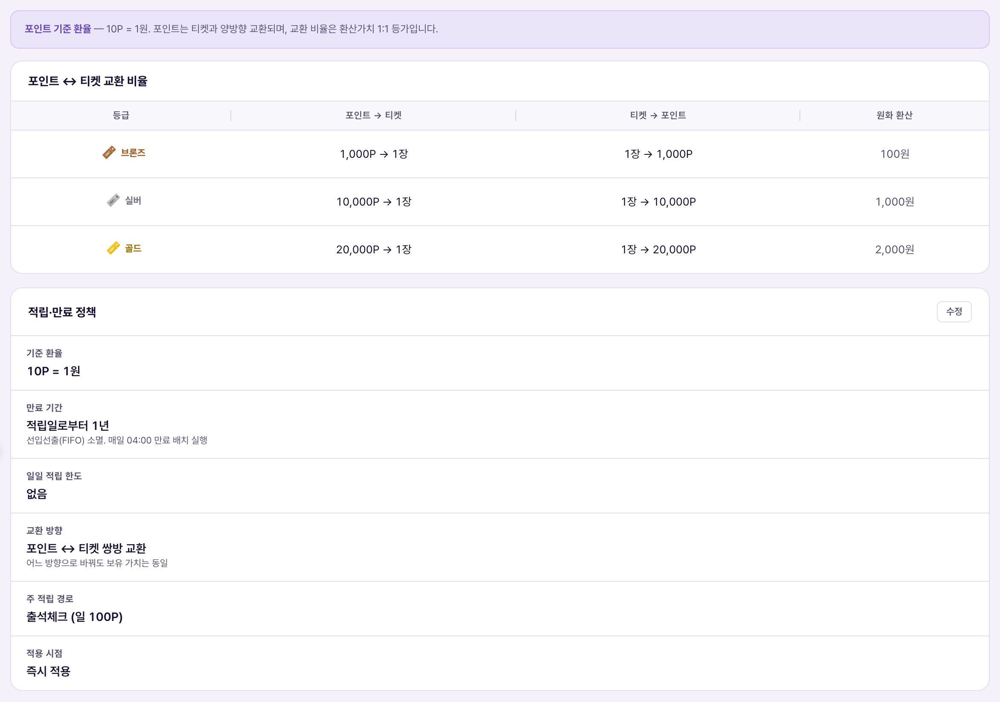
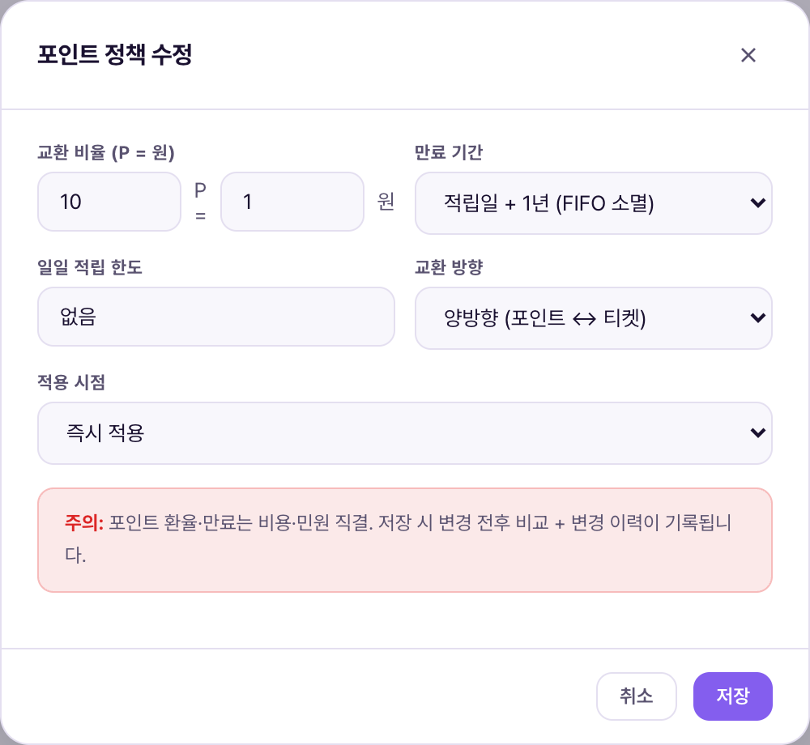

포인트 정책은 포인트 1P가 몇 원이고, 티켓과 어떻게 맞바꾸며, 언제 사라지는지를 정하는 화면이다. 포인트 내역이 "무슨 일이 있었는지"를 보는 화면이라면, 이 화면은 "앞으로 어떤 규칙으로 움직일지"를 정하는 화면이다. 여기 숫자를 바꾸면 모든 회원의 포인트 가치가 그 순간부터 전부 바뀐다 — 서비스 전체에서 가장 민감한 설정 중 하나다.Chính sách điểm là màn quy định 1P đáng bao nhiêu won, đổi với vé theo tỷ lệ nào, và khi nào thì mất hiệu lực. Nếu Lịch sử điểm là màn xem "đã xảy ra chuyện gì" thì đây là màn quy định "từ giờ sẽ vận hành theo luật nào". Đổi số ở đây là đổi giá trị điểm của tất cả hội viên ngay lập tức — một trong những cài đặt nhạy cảm nhất toàn hệ thống.

화면은 두 블록으로 나뉜다. 위쪽 포인트↔티켓 교환 비율 표는 등급별(브론즈·실버·골드) 교환비를 보여주고, 아래쪽 적립·만료 정책 카드는 [수정] 버튼으로 편집 가능한 6개 항목을 보여준다.Màn chia làm 2 khối. Bảng tỷ lệ đổi điểm↔vé phía trên hiển thị tỷ lệ theo hạng (đồng·bạc·vàng), khối chính sách tích·hết hạn phía dưới hiển thị 6 mục có thể chỉnh qua nút [Sửa].
| 요소Thành phần | 의미Ý nghĩa | 바꾸면 생기는 일Điều gì xảy ra khi thay đổi |
|---|---|---|
| 포인트↔티켓 교환 비율Tỷ lệ đổi điểm↔vé | 브론즈 1,000P·실버 10,000P·골드 20,000P = 각 등급 티켓 1장Đồng 1.000P·Bạc 10.000P·Vàng 20.000P = 1 vé mỗi hạng | 이 표는 이번 화면에서 직접 수정하는 UI가 보이지 않는다(연필 아이콘만 존재). 등급 티켓 가치 자체를 바꾸려면 정책서의 "정책 변경 마법사"(별도 화면)를 거쳐야 하는 것으로 보인다.Không thấy UI chỉnh trực tiếp trên màn này (chỉ có icon bút chì). Muốn đổi giá trị vé hạng có vẻ phải qua "trình hướng dẫn đổi chính sách" (màn riêng) theo tài liệu chính sách. |
| 기준 환율(P=원)Tỷ giá chuẩn (P=won) | 포인트 1P의 원화 가치Giá trị won của 1P | 이 값을 바꾸면 포인트의 실질 가치가 전체적으로 바뀐다 — 아래 등급 교환비율표와 별개 필드라, 두 값을 같이 맞추지 않으면 "포인트로 산 티켓이 직접 산 티켓보다 싸다" 같은 차익거래가 생길 수 있다.Đổi giá trị này làm giá trị thực của điểm thay đổi toàn diện — vì là ô riêng với bảng tỷ lệ đổi hạng bên trên, nếu không chỉnh đồng bộ cả hai có thể sinh ra kiểu chênh lệch giá "vé mua bằng điểm rẻ hơn mua trực tiếp". |
| 만료 기간Thời hạn hết hạn | 적립일 + 1년, FIFO(선입선출) 소멸Ngày tích + 1 năm, tiêu hủy FIFO | 드롭다운으로 기간을 바꾸면 이후 신규 적립분부터 새 규칙이 적용될 것으로 보인다. 기존 발행분까지 소급되는지는 확인이 필요하다.Đổi thời hạn qua dropdown dự kiến áp dụng cho phần tích mới về sau. Có hồi tố cho phần đã phát hành hay không thì cần được xác nhận. |
| 일일 적립 한도Hạn mức tích lũy hằng ngày | 하루에 쌓을 수 있는 포인트 상한(현재 "없음")Trần điểm tích được trong 1 ngày (hiện "không có") | 값을 입력하면 그 초과분부터 적립이 차단된다. 포인트는 일일 적립 한도가 없는 것이 정책 기준이라, 값을 넣으면 정책서와 어긋나므로 임의로 바꾸지 않는다.Nhập giá trị thì phần vượt sẽ bị chặn tích. Chuẩn chính sách là điểm không có hạn mức tích hằng ngày, nên nhập giá trị sẽ lệch với chính sách — không tự ý đổi. |
| 교환 방향Chiều đổi | 양방향(포인트 ↔ 티켓) 또는 단방향 선택Chọn 2 chiều (điểm ↔ vé) hoặc 1 chiều | 단방향으로 바꾸면 회원이 한쪽으로만 전환 가능해진다(예: 포인트→티켓만 되고 티켓→포인트는 막힘). 정책 기준은 양방향이다.Đổi sang 1 chiều thì hội viên chỉ đổi được 1 hướng (VD: chỉ điểm→vé, chặn vé→điểm). Chuẩn chính sách là 2 chiều. |
| 적용 시점Thời điểm áp dụng | 변경사항을 언제부터 반영할지(현재 "즉시 적용")Áp dụng thay đổi từ khi nào (hiện "áp dụng ngay") | 즉시 적용이 아닌 값으로 바꾸면 예약 적용이 가능한 것으로 보인다. 구체적인 옵션·동작은 확인이 필요하다.Đổi khác "áp dụng ngay" có vẻ có thể đặt lịch áp dụng. Các lựa chọn·hành vi cụ thể cần được xác nhận. |

모달 하단에 실제로 노출되는 경고 문구: "주의: 포인트 환율·만료는 비용·민원 직결. 저장 시 변경 전후 비교 + 변경 이력이 기록됩니다." 저장 버튼을 누르면 (1)변경 전/후 값을 비교해서 보여주고 (2)누가 언제 무엇을 바꿨는지 이력이 남는다.Nguyên văn cảnh báo hiển thị ở đáy modal: "Chú ý: tỷ giá·hết hạn điểm ảnh hưởng trực tiếp chi phí·khiếu nại. Khi lưu sẽ so sánh trước/sau + ghi lịch sử thay đổi." Khi bấm lưu sẽ (1) so sánh và hiển thị giá trị trước/sau (2) lưu lại lịch sử ai đổi gì khi nào.
두 값의 차이는 데모 데이터 오류로 추정되지만, 임의로 고치지 않고 확인 필요 상태로 남긴다. 실 운영 전환 시 반드시 10P=1원으로 맞춰야 하며, 그 전까지 이 화면의 "기준 환율" 필드 값은 정책서 기준값보다 신뢰도가 낮다고 보고 사용한다.Chênh lệch giữa 2 giá trị được suy đoán là lỗi dữ liệu demo, nhưng không tự ý sửa mà để ở trạng thái cần xác nhận. Khi chuyển sang vận hành thật bắt buộc phải chỉnh về 10P=1 won, và cho đến lúc đó nên coi giá trị ô "tỷ giá chuẩn" trên màn này có độ tin cậy thấp hơn giá trị chuẩn trong tài liệu chính sách.
| 상황Tình huống | 운영자가 하는 일Việc Vận hành viên làm | 결과Kết quả |
|---|---|---|
| 등급 티켓 가치 조정과 세트로 변경Đổi cùng bộ với thay đổi giá trị vé hạng | 등급 단가(브론즈 100원 등)를 바꿀 때, 포인트 기준 환율·포인트→티켓 교환비도 함께 검토Khi đổi đơn giá hạng (VD: đồng 100 won), đồng thời rà soát cả tỷ giá điểm chuẩn·tỷ lệ đổi điểm→vé | 따로 바꾸면 "포인트로 사는 게 더 싸다"는 차익거래 경로가 열림 — 정책서의 "한 세트로 연동 수정" 원칙 적용 대상Nếu chỉ đổi riêng lẻ sẽ mở đường chênh lệch giá kiểu "mua bằng điểm rẻ hơn" — thuộc phạm vi nguyên tắc "sửa đồng bộ theo bộ" của chính sách |
| 기준 환율 정정Sửa lại tỷ giá chuẩn | [수정] → 교환 비율(P=원)을 10/4에서 10/1로 정정 → 사유 확인 후 저장[Sửa] → chỉnh tỷ lệ đổi (P=won) từ 10/4 về 10/1 → xác nhận lý do rồi lưu | 변경 전후 비교 화면이 뜨고 이력이 기록된다. 저장 전 값을 재확인한다.Hiện màn so sánh trước/sau và ghi lịch sử. Kiểm tra lại giá trị trước khi lưu. |